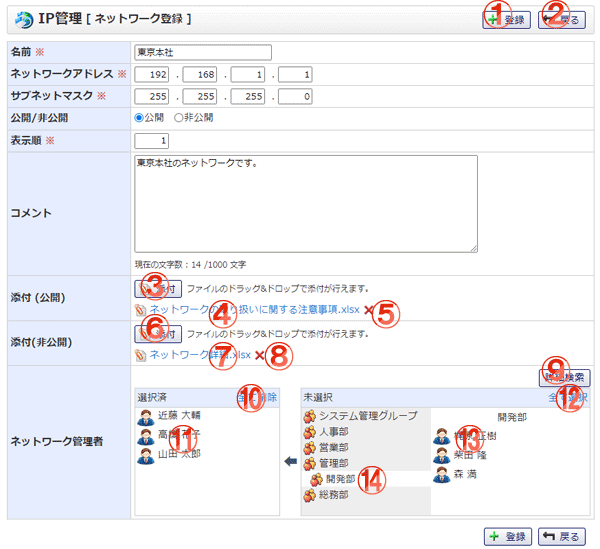

ネットワークを新規登録する画面です。

機能説明
登録ボタンネットワーク登録確認画面へ遷移します。 |
戻るボタン遷移元画面へ遷移します。 |
|---|---|
添付ボタンフォルダウィンドウが開きます。フォルダウィンドウでファイルを選択すると、添付ボタンの下にファイル名が表示されます。 |
ファイル名ファイルをダウンロードします。 |
削除アイコンファイルを削除します。 |
添付ボタンフォルダウィンドウが開きます。フォルダウィンドウでファイルを選択すると、添付ボタンの下にファイル名が表示されます。 |
ファイル名ファイルをダウンロードします。 |
削除アイコンファイルを削除します。 |
詳細検索ボタンユーザ選択ポップアップが表示されます。 |
全て削除ボタン選択済エリアに表示されている全てのユーザを未選択状態にします。 |
選択済ユーザユーザ名をクリックすることで、ユーザを未選択状態にします。 |
全て選択ボタン未選択エリアに表示されている全てのユーザを選択済エリアに追加します。 |
未選択ユーザユーザ名をクリックすることで、ユーザを選択済エリアに追加します。 |
グループ名グループ名をクリックすることで、グループに所属するユーザが未選択エリアに表示されます。 |
表示・入力項目説明
名前
ネットワーク名を入力します（50文字以内）。
ネットワークアドレス
ネットワークアドレスを入力します（255以下の数字）。
サブネットマスク
サブネットマスクを入力します（255以下の数字）。
公開/非公開
ネットワークの公開・非公開を選択ます。
表示順
ネットワーク一覧画面での表示順を入力します（3文字以内）
コメント
コメントを入力します（1000文字以内）。
添付(公開)
添付するファイルを選択します（全ユーザが閲覧可能な添付です）。
添付(非公開)
添付するファイルを選択します（ネットワーク管理者以上の権限がないユーザは閲覧できません）。
ネットワーク管理者
ネットワークの管理者として設定するユーザを選択します。